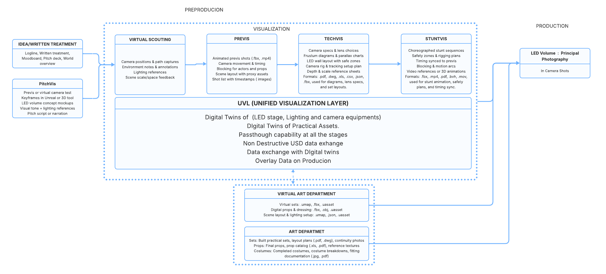

Problem Statement
In current In-Camera Visual Effects (ICVFX) pipelines spanning Virtual Scouting, Previs, Techvis, Stuntviz, and Production each stage produces deliverables tailored to its specific goals, often in simplified formats such as static images or videos. While effective within their context, these outputs frequently strip away essential spatio-temporal metadata such as camera motion paths, rigging constraints, set measurements, or lighting dependencies. As a result, critical decisions made in earlier stages must be manually reconstructed or reinterpreted in later phases, leading to duplicated effort, miscommunication, and costly delays.
Proposed Solution
The fragmentation and loss of critical metadata across ICVFX stages stem from a persistent tension between the physical and virtual aspects of the production pipeline. As creative intent is translated into technical execution, decisions are often reinterpreted or reduced to limited formats that fail to serve the needs of downstream stages. To address this, we propose a Mixed Reality digital twin framework that unifies physical and virtual workflows through persistent, interoperable scene data. Digital twins, encoded in USD, offer a robust foundation for storing and exchanging spatial and temporal information including camera motion, rig constraints, lighting setups, and set measurements—across all production phases. By integrating Mixed Reality interfaces, teams can directly view and manipulate this data in context, interacting with both virtual assets and their physical counterparts in real space. This approach enables a non-destructive, evolving workflow, where decisions made during scouting or previs remain accessible, editable, and grounded in the practical realities of production through to the final shoot.Current ICVFX Pipeline

Proposed Unified Visualization Layer(UVL) Pipeline
Digital Twin of LED wall represented in USD Layers